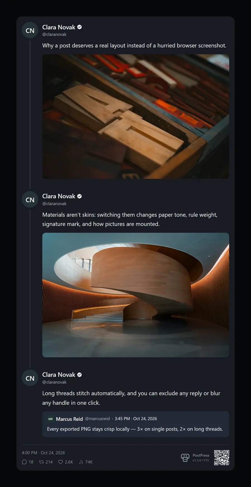

Досить вирізати скріншоти вручну. Натисніть кнопку на пості (або Alt + C), щоб скопіювати один пост чи гілку одного автора як чітку картку 3× прямо в буфер обміну. Дванадцять тем, повністю локальний рендеринг на вашому пристрої.
ОпівнічГлибоке темне тло та світлий шрифт, зручно вночі.
Гілки з’єднуються самі.
Пости однієї гілки об’єднуються за автором і часом, а реклама та сторонні відповіді відсіюються. Два шляхи: спершу власний GraphQL-кеш X, а за його відсутності — відрендерений DOM. Будь-який небажаний пост прибирається одним кліком.

Три пости одного автора, один із цитатою: уся картка так, як вона експортується.
Пости
3
Фото
2
Цитата
1
Експорт
1472 × 2854
Послідовні пости одного автора об’єднуються; реклама й чужі відповіді не потрапляють
Довгі гілки експортуються у 2× типово, щоб вкластися в ліміт розміру
Якщо картка стане надто дрібною у стрічці, панель попередить до експорту
Як зробити чистий скріншот твіта без зайвого
Зазвичай скріншот твіта роблять для презентації, розсилки чи чату — і в кадр потрапляють відповіді, бічні панелі та нечіткий текст. Перетворити твіт на картинку зазвичай можна трьома способами, і кожен має чітку ціну.
Скріншот на телефоні
Натисніть кнопки на iOS або Android, а потім обріжте рядок стану, значки навігації й першу відповідь знизу. Для короткого поста це швидко, але роздільність прив’язана до екрана, поля нерівні, а довгу гілку доводиться склеювати вручну з кількох знімків.
Захоплення області в браузері
Використайте системні ножиці або комбінацію клавіш браузера, щоб обвести пост на комп’ютері. Контролю над кадром трохи більше, ніж на телефоні, проте ви все одно залежите від DPI монітора, елементів браузера чи станів наведення, і цитати або сітки фото біля краю доводиться перезнімати.
Рендеринг поста як картки
Замість фотографування пікселів з екрана зчитуються текст, медіа й структура гілки, і все верстається заново на чистому полотні. Недолік онлайн-сервісів у тому, що зазвичай треба вставляти URL на сторонній сервер, чекати лімітів API або терпіти водяні знаки й розірвані гілки.
PostPress виконує третій підхід повністю у вашому браузері: натисніть кнопку картки на будь-якому пості X (або Alt + C), оберіть тему й скопіюйте чіткий PNG 3× прямо в буфер обміну — без відповідей, без реклами, без сервера й без входу.
Твіт, локально відрендерений у темі «Опівніч» — жодних рамок браузера й зайвих відповідей.
Статті, цитати й сітки зображень зберігаються.
Стаття X зберігає обкладинку й лід; цитований пост заповнюється або обводиться під стиль теми; від одного до двадцяти зображень зберігають свої пропорції в сітці, від п’ятого — по чотири в ряд (режим «Заповнити» обрізає у квадрат).
«Не фільтр — а папір, лінія і шрифт у правильній пропорції.»
СтаттяОбкладинка, рубрика, заголовок і перший абзац передаються разом.
ЦитатаЗаливка або контур — відповідно до теми.
ЗображенняВід 1 до 20 зберігають власні пропорції без обрізання в квадрат; від 5-го — по 4 у ряд, а «Заповнити» робить квадрати.
Вісім перемикачів, одна студія.
Тема, полотно, тло, підвал картки, розмиття автора й роздільність експорту зібрані в одному вікні Studio; змініть будь-який пункт, і попередній перегляд ліворуч одразу оновиться. Ваші налаштування запам’ятовуються, тож щодня досить відкрити й натиснути «Копіювати».
Реальне вікно Studio: перегляд ліворуч і керування праворуч синхронізуються наживо.
Усе увімкненоQR, статистика, дата, підпис.Без підвалуЛише основний текст.РозмитоАвтор і цитований автор разом.
Працює на вашому пристрої від початку до кінця.
Жодних акаунтів, серверів і телеметрії. Верстка відбувається в ізольованому Shadow DOM, а експорт малює власний Canvas браузера. Крім завантаження вже наявних у картці зображень із серверів X, нічого не покидає ваш комп’ютер.
Не читає вашу стрічку, не потребує акаунта X і X API. Не пов’язано з X Corp.
clipboardWriteЗаписує готове зображення в буфер обміну лише тоді, коли ви натискаєте «Копіювати».
storageЛокально запам’ятовує вашу тему, полотно й перемикачі.
*.twimg.comЗавантажує зображення картки. Без цього Canvas не може читати сторонні зображення.
У ваш браузер.
Встановіть із Chrome Web Store в один клік або розгорніть нижче три кроки збирання з вихідного коду.
Випущено під ліцензією GPL-3.0-or-later: поширюйте свої зміни під тією самою ліцензією.
Для розробників: збірка з вихідного коду (3 кроки)
Зібрати
Клонуйте код, встановіть залежності та зберіть. Результат потрапить у dist/.
Завантажити
Відкрийте chrome://extensions, увімкніть режим розробника, виберіть «Завантажити розпаковане розширення» та вкажіть теку dist/.
Користуватися
Натисніть кнопку картки на будь-якому пості (або наведіть і натисніть Alt + C), виберіть «Копіювати зображення» та вставте будь-де.
git clone https://github.com/Shirolin/postpress.git
cd postpress
pnpm install
pnpm run build # → dist/
Часті запитання
Вісім реальних запитань — відповіді праворуч.
Чому б просто не зробити скріншот?
Ручне обрізання означає ховати відповіді, склеювати довгі гілки з кількох знімків і миритися з DPI екрана та рамками браузера. Один клік по PostPress верстає весь пост чи гілку за правилами теми та кладе чітке зображення 3× прямо в буфер обміну.
Чи не стане довга картка розмитою у стрічці?
Один пост експортується у 3×. Дуже довга гілка типово йде у 2×, щоб залишатися під обмеженням розміру; якщо текст стане замалим для читання, панель заздалегідь попередить і запропонує розділити. У налаштуваннях експорту є загальний перемикач 3×.
Чи потрібно входити або підключати X?
Ні. Немає жодної системи акаунтів: розширення читає лише те, що вже відрендерено на сторінці перед вами, і ніколи не торкається облікових даних.
Чи завантажується щось у мережу?
Ні. Зображення потрапляє лише у буфер обміну та на ваш диск; закриття перегляду звільняє решту. Вміст постів не зберігається.
Чи можна використовувати комерційно?
Програма поширюється під GPL-3.0-or-later і вільна для комерційного використання. Тексти й зображення всередині картки належать їхнім авторам; перевірте перед повторним поширенням.
У яких браузерах це працює?
Chrome та Edge, починаючи з Chrome 111 (Manifest V3). Firefox і Safari поки не підтримуються: розширення побудоване на API розширень Chromium.
Як зробити скріншот твіта без відповідей?
Натисніть кнопку картки PostPress на пості (або наведіть курсор і натисніть Alt + C). PostPress зчитує лише цей пост — або послідовні пости того самого автора в гілці — і автоматично відкидає рекламу та сторонні відповіді. Зайвий пост із гілки можна виключити в один клік перед копіюванням.
Чи можна перетворити твіт на PNG?
Так. PostPress рендерить картку локально у браузері та копіює PNG 3× прямо в буфер обміну (або завантажує файл PNG на диск). Дуже довгі гілки типово зберігаються у 2× через ліміт розміру, з опцією 3× у налаштуваннях експорту.
Ваш наступний пост вартий паперу.
Встановіть один раз — і кнопка завжди в панелі кожного поста. Один клік до буфера обміну, готово до вставки будь-де.